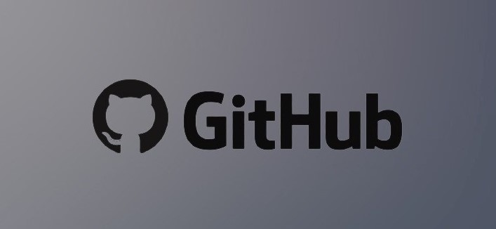

I am a Computer Science Student at the University of Waterloo.
This website is a compliations of my CV, previous experinces, awards and projects.
Introduction
My passion for programming brought me to the Cheriton School of Computer Science at the University of Waterloo. I am working towards my BCS and am scheduled to complete it in 2024. I am interested specifically in FinTech, Software Engineering, and Data Science.
I continue to develop my skills through online coursework, side projects, datathons and hackathons. To see my projects, check out my GitHub profile. I am specifically looking for opertunities related to Software Engineering and Quantitative Research; however, I am willing to work flexibly in a different position. I value hard work, equality, and honesty. I like keeping up with the latest news in the world of technology and spending time with family. In the coming years, I hope to develop both as a person and as a working professional.
Projects Overview

Forex
Currency conversion fees are usually considered to be unavoidable. But due to the amount of money exchanged globally between different currencies, traders could easily exchange the money directly between themselves, thus avoiding the conversion fees. This website is where people would post what currencies they have and which ones they desire. Once a match is found they meet up and trade. The code could be seen on the following GitHub link: https://github.com/mhzaman-cs/Forex
Citadel DataOpen Report
The East-Coast Dataopen hosted by Citadel and Correlation One is an invite-only Datathon featuring university students across the east coast. The event started on the 21st of March and ended on the 28th, lasting about a whole week. I was in a team of two where we analyzed the non-conventional indicators and instigators of traffic. We posed the following question: "How would investments in businesses and education affect traffic and road safety in major American cities?" In this report, we analyzed datasets and later created recommendations for which non-conventional areas municipal governments should invest in to reduce traffic congestion. The three cities of focus were New York, NY, Austin, TX, and Washington, DC. We analyzed publicly available data on 311 calls, building permits, business licenses, population education level and traffic congestion statistics. The report could be seen on the following GitHub link: https://github.com/mhzaman-cs/Citadel-Datathon
Amazon Customer Reviews Scraper
This web scraping project would download amazon reviews using scrapy and its built-in files. To choose which product to download go into reviews.py in spiders and change the values in the list of ASIN numbers to the products you would like to download. Then run the program in the command prompt. The code for the project could be seen on the following GitHub link: https://github.com/mhzaman-cs/amazonReviews
Vaccinator
I had built a game based on Space Invaders with a Covid-19 spin on it. It was a solo project submitted to Hack-cade, a hackathon hosted by MLH. The project was made using python with the following modules: pygame, os, time, and random. The code could be seen on the following GitHub link: https://github.com/mhzaman-cs/Covid-19-Game
S&P 500 Stocks Visualization System
This is a stock visualization system, which creates various graphs based on user input. It can visualize the S&P 500 stocks from 2013-2018 based on a Kaggle data set. This project utilizes the python libraries of pandas and plotly. The code could be seen on the following GitHub link: https://github.com/mhzaman-cs/S-P500-Stock-Visulaization
Weather City
WeatherCity is a full-stack web app, it utilizes node.js for its backend along with OpenWeatherMap's API to display the weather in the city inputted in
the search bar. It also shows the current weather based on location on the home page. The code for the project could be seen on the following GitHub link: https://github.com/mhzaman-cs/WeatherProject
Website Generator
This project would produce frontend webpages based on a series of questions and would then return static pages as code in the form of zip files. This would allow for flexibility while offering professional websites for users to utilize. The code could be seen on the following GitHub link: https://github.com/mhzaman-cs/WebsiteGen
Old Website
My old personal website which I had made over the summer. It was a one-page static website that featured my experiences and achievement much like this one does, however, it had a completely different UX/UI design. The code for the project could be seen on the following GitHub link: https://github.com/mhzaman-cs/Front-End-Personal-Site
Simon Game
The Simon game is an online version of the board game Simon. The board is the screen and the 4 colors correspond to the 4 colors in Simon. The objective of this game is to remember the chain of colors that were presented by the game and to input them every time the level changes. The code for the project could be seen on the following GitHub link: https://github.com/mhzaman-cs/Simon-Game-Challenge
Drum Kit
Drum kit is an online virtual mimic of a drum set, with different keys corresponding to different types of drums. The buttons may also be clicked using the mouse pad, however, using the keyboard offers a more realistic experience. The code could be seen on the following GitHub link: https://github.com/mhzaman-cs/Drum-Kit
Dice Game
The dice challenge was one of the first challenges that I had done. The objective was to use basic javascript to create an online simulation of rolling a dice. A single die represents each player, the winner of the game would be the one that rolls the higher number. Refreshing the page would roll the dice again while informing the players of who had won. The code for the project could be seen on the following GitHub link: https://github.com/mhzaman-cs/Dicee_Challenge
TinDog
TinDog is a remix of tinder but for dogs. This website uses Bootstrap, HTML, and CSS to create a single-page static website. The written content of this webpage was provided by a course on Udemy and the challenge was to
recreate a webpage based on a pdf document that was provided. I have added my spin to the website to make its UI/UX design more pleasant. The website could be seen on the following webpage: https://mhzaman-cs.github.io/TinDog/. The code could be seen on the following GitHub link: https://github.com/mhzaman-cs/TinDog.
Resume
Contact
I am actively looking for internships opportunities over the school year. I am interested specifically in FinTech, Quant, Software Engineering, and Data Science. I continue to develop these skills through online coursework, side projects, and hackathons (see GitHub for more information). Although internships specifically related to computer science and stats interest me I am willing to work flexibly in a different position. Besides internships I am also open to full-time and part-time employment, freelance opportunities, tutoring, volunteer work, working together in hackathons, etc.
Feel free to contact me through email at mhzaman.cs@gmail.com, or reach out to me through any of the platforms linked below.